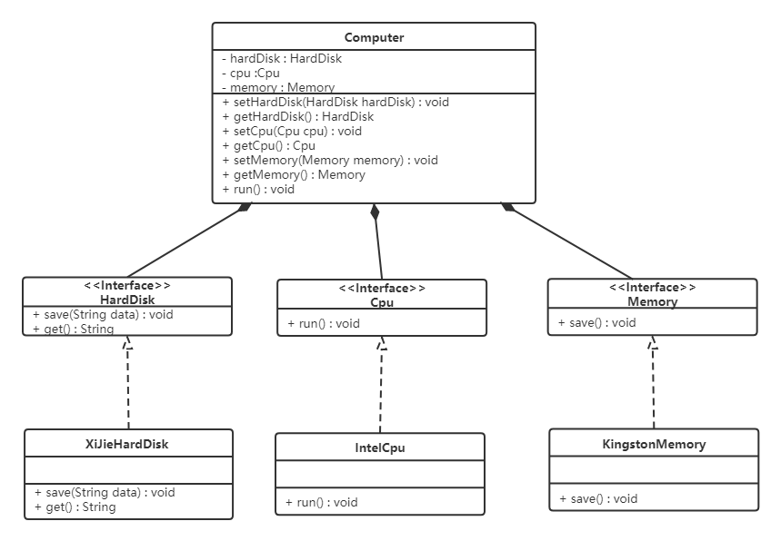

1，设计模式概述
1.1 软件设计模式的产生背景
"设计模式"最初并不是出现在软件设计中，而是被用于建筑领域的设计中。
1977年美国著名建筑大师、加利福尼亚大学伯克利分校环境结构中心主任克里斯托夫·亚历山大（Christopher Alexander）在他的著作《建筑模式语言：城镇、建筑、构造》中描述了一些常见的建筑设计问题，并提出了 253 种关于对城镇、邻里、住宅、花园和房间等进行设计的基本模式。
1990年软件工程界开始研讨设计模式的话题，后来召开了多次关于设计模式的研讨会。直到1995 年，艾瑞克·伽马（ErichGamma）、理査德·海尔姆（Richard Helm）、拉尔夫·约翰森（Ralph Johnson）、约翰·威利斯迪斯（John Vlissides）等 4 位作者合作出版了《设计模式：可复用面向对象软件的基础》一书，在此书中收录了 23 个设计模式，这是设计模式领域里程碑的事件，导致了软件设计模式的突破。这 4 位作者在软件开发领域里也以他们的“四人组”（Gang of Four，GoF）著称。
1.2 软件设计模式的概念
软件设计模式（Software Design Pattern），又称设计模式，是一套被反复使用、多数人知晓的、经过分类编目的、代码设计经验的总结。它描述了在软件设计过程中的一些不断重复发生的问题，以及该问题的解决方案。也就是说，它是解决特定问题的一系列套路，是前辈们的代码设计经验的总结，具有一定的普遍性，可以反复使用。
1.3 学习设计模式的必要性
设计模式的本质是面向对象设计原则的实际运用，是对类的封装性、继承性和多态性以及类的关联关系和组合关系的充分理解。
正确使用设计模式具有以下优点。
- 可以提高程序员的思维能力、编程能力和设计能力。
- 使程序设计更加标准化、代码编制更加工程化，使软件开发效率大大提高，从而缩短软件的开发周期。
- 使设计的代码可重用性高、可读性强、可靠性高、灵活性好、可维护性强。
1.4 设计模式分类
创建型模式
用于描述“怎样创建对象”，它的主要特点是“将对象的创建与使用分离”。GoF（四人组）书中提供了单例、原型、工厂方法、抽象工厂、建造者等 5 种创建型模式。
结构型模式
用于描述如何将类或对象按某种布局组成更大的结构，GoF（四人组）书中提供了代理、适配器、桥接、装饰、外观、享元、组合等 7 种结构型模式。
行为型模式
用于描述类或对象之间怎样相互协作共同完成单个对象无法单独完成的任务，以及怎样分配职责。GoF（四人组）书中提供了模板方法、策略、命令、职责链、状态、观察者、中介者、迭代器、访问者、备忘录、解释器等 11 种行为型模式。
2，UML图
统一建模语言（Unified Modeling Language，UML）是用来设计软件的可视化建模语言。它的特点是简单、统一、图形化、能表达软件设计中的动态与静态信息。
UML 从目标系统的不同角度出发，定义了用例图、类图、对象图、状态图、活动图、时序图、协作图、构件图、部署图等 9 种图。
2.1 类图概述
类图(Class diagram)是显示了模型的静态结构，特别是模型中存在的类、类的内部结构以及它们与其他类的关系等。类图不显示暂时性的信息。类图是面向对象建模的主要组成部分。
2.2 类图的作用
- 在软件工程中，类图是一种静态的结构图，描述了系统的类的集合，类的属性和类之间的关系，可以简化了人们对系统的理解；
- 类图是系统分析和设计阶段的重要产物，是系统编码和测试的重要模型。
2.3 类图表示法
2.3.1 类的表示方式
在UML类图中，类使用包含类名、属性(field) 和方法(method) 且带有分割线的矩形来表示，比如下图表示一个Employee类，它包含name,age和address这3个属性，以及work()方法。

属性/方法名称前加的加号和减号表示了这个属性/方法的可见性，UML类图中表示可见性的符号有三种：
- +：表示public
- -：表示private
- #：表示protected
属性的完整表示方式是： 可见性 名称 ：类型 [ = 缺省值]
方法的完整表示方式是： 可见性 名称(参数列表) [ ： 返回类型]
注意：
1，中括号中的内容表示是可选的
2，也有将类型放在变量名前面，返回值类型放在方法名前面
举个栗子：

上图Demo类定义了三个方法：
- method()方法：修饰符为public，没有参数，没有返回值。
- method1()方法：修饰符为private，没有参数，返回值类型为String。
- method2()方法：修饰符为protected，接收两个参数，第一个参数类型为int，第二个参数类型为String，返回值类型是int。
2.3.2 类与类之间关系的表示方式
2.3.2.1 关联关系
关联关系是对象之间的一种引用关系，用于表示一类对象与另一类对象之间的联系，如老师和学生、师傅和徒弟、丈夫和妻子等。关联关系是类与类之间最常用的一种关系，分为一般关联关系、聚合关系和组合关系。我们先介绍一般关联。
关联又可以分为单向关联，双向关联，自关联。
1，单向关联

在UML类图中单向关联用一个带箭头的实线表示。上图表示每个顾客都有一个地址，这通过让Customer类持有一个类型为Address的成员变量类实现。
2，双向关联

从上图中我们很容易看出，所谓的双向关联就是双方各自持有对方类型的成员变量。
在UML类图中，双向关联用一个不带箭头的直线表示。上图中在Customer类中维护一个List<Product>，表示一个顾客可以购买多个商品；在Product类中维护一个Customer类型的成员变量表示这个产品被哪个顾客所购买。
3，自关联

自关联在UML类图中用一个带有箭头且指向自身的线表示。上图的意思就是Node类包含类型为Node的成员变量，也就是“自己包含自己”。
2.3.2.2 聚合关系
聚合关系是关联关系的一种，是强关联关系，是整体和部分之间的关系。
聚合关系也是通过成员对象来实现的，其中成员对象是整体对象的一部分，但是成员对象可以脱离整体对象而独立存在。例如，学校与老师的关系，学校包含老师，但如果学校停办了，老师依然存在。
在 UML 类图中，聚合关系可以用带空心菱形的实线来表示，菱形指向整体。下图所示是大学和教师的关系图：

2.3.2.3 组合关系
组合表示类之间的整体与部分的关系，但它是一种更强烈的聚合关系。
在组合关系中，整体对象可以控制部分对象的生命周期，一旦整体对象不存在，部分对象也将不存在，部分对象不能脱离整体对象而存在。例如，头和嘴的关系，没有了头，嘴也就不存在了。
在 UML 类图中，组合关系用带实心菱形的实线来表示，菱形指向整体。下图所示是头和嘴的关系图：

2.3.2.4 依赖关系
依赖关系是一种使用关系，它是对象之间耦合度最弱的一种关联方式，是临时性的关联。在代码中，某个类的方法通过局部变量、方法的参数或者对静态方法的调用来访问另一个类（被依赖类）中的某些方法来完成一些职责。
在 UML 类图中，依赖关系使用带箭头的虚线来表示，箭头从使用类指向被依赖的类。下图所示是司机和汽车的关系图，司机驾驶汽车：

2.3.2.5 继承关系
继承关系是对象之间耦合度最大的一种关系，表示一般与特殊的关系，是父类与子类之间的关系，是一种继承关系。
在 UML 类图中，泛化关系用带空心三角箭头的实线来表示，箭头从子类指向父类。在代码实现时，使用面向对象的继承机制来实现泛化关系。例如，Student 类和 Teacher 类都是 Person 类的子类，其类图如下图所示：

2.3.2.6 实现关系
实现关系是接口与实现类之间的关系。在这种关系中，类实现了接口，类中的操作实现了接口中所声明的所有的抽象操作。
在 UML 类图中，实现关系使用带空心三角箭头的虚线来表示，箭头从实现类指向接口。例如，汽车和船实现了交通工具，其类图如图 9 所示。

3，软件设计原则
在软件开发中，为了提高软件系统的可维护性和可复用性，增加软件的可扩展性和灵活性，程序员要尽量根据6条原则来开发程序，从而提高软件开发效率、节约软件开发成本和维护成本。
3.1 开闭原则
对扩展开放，对修改关闭。在程序需要进行拓展的时候，不能去修改原有的代码，实现一个热插拔的效果。简言之，是为了使程序的扩展性好，易于维护和升级。
想要达到这样的效果，我们需要使用接口和抽象类。
因为抽象灵活性好，适应性广，只要抽象的合理，可以基本保持软件架构的稳定。而软件中易变的细节可以从抽象派生来的实现类来进行扩展，当软件需要发生变化时，只需要根据需求重新派生一个实现类来扩展就可以了。
下面以 搜狗输入法 的皮肤为例介绍开闭原则的应用。
【例】搜狗输入法 的皮肤设计。
分析：搜狗输入法 的皮肤是输入法背景图片、窗口颜色和声音等元素的组合。用户可以根据自己的喜爱更换自己的输入法的皮肤，也可以从网上下载新的皮肤。这些皮肤有共同的特点，可以为其定义一个抽象类（AbstractSkin），而每个具体的皮肤（DefaultSpecificSkin和HeimaSpecificSkin）是其子类。用户窗体可以根据需要选择或者增加新的主题，而不需要修改原代码，所以它是满足开闭原则的。

3.2 里氏代换原则
里氏代换原则是面向对象设计的基本原则之一。
里氏代换原则：任何基类可以出现的地方，子类一定可以出现。通俗理解：子类可以扩展父类的功能，但不能改变父类原有的功能。换句话说，子类继承父类时，除添加新的方法完成新增功能外，尽量不要重写父类的方法。
如果通过重写父类的方法来完成新的功能，这样写起来虽然简单，但是整个继承体系的可复用性会比较差，特别是运用多态比较频繁时，程序运行出错的概率会非常大。
下面看一个里氏替换原则中经典的一个例子
【例】正方形不是长方形。
在数学领域里，正方形毫无疑问是长方形，它是一个长宽相等的长方形。所以，我们开发的一个与几何图形相关的软件系统，就可以顺理成章的让正方形继承自长方形。

代码如下：
长方形类（Rectangle）：
x1public class Rectangle {2 private double length;3 private double width;45 public double getLength() {6 return length;7 }89 public void setLength(double length) {10 this.length = length;11 }1213 public double getWidth() {14 return width;15 }1617 public void setWidth(double width) {18 this.width = width;19 }20}正方形（Square）：
由于正方形的长和宽相同，所以在方法setLength和setWidth中，对长度和宽度都需要赋相同值。
xxxxxxxxxx121public class Square extends Rectangle {2 3 public void setWidth(double width) {4 super.setLength(width);5 super.setWidth(width);6 }78 public void setLength(double length) {9 super.setLength(length);10 super.setWidth(length);11 }12}类RectangleDemo是我们的软件系统中的一个组件，它有一个resize方法依赖基类Rectangle，resize方法是RectandleDemo类中的一个方法，用来实现宽度逐渐增长的效果。
xxxxxxxxxx291public class RectangleDemo {2 3 public static void resize(Rectangle rectangle) {4 while (rectangle.getWidth() <= rectangle.getLength()) {5 rectangle.setWidth(rectangle.getWidth() + 1);6 }7 }89 //打印长方形的长和宽10 public static void printLengthAndWidth(Rectangle rectangle) {11 System.out.println(rectangle.getLength());12 System.out.println(rectangle.getWidth());13 }1415 public static void main(String[] args) {16 Rectangle rectangle = new Rectangle();17 rectangle.setLength(20);18 rectangle.setWidth(10);19 resize(rectangle);20 printLengthAndWidth(rectangle);2122 System.out.println("============");2324 Rectangle rectangle1 = new Square();25 rectangle1.setLength(10);26 resize(rectangle1);27 printLengthAndWidth(rectangle1);28 }29}我们运行一下这段代码就会发现，假如我们把一个普通长方形作为参数传入resize方法，就会看到长方形宽度逐渐增长的效果，当宽度大于长度,代码就会停止，这种行为的结果符合我们的预期；假如我们再把一个正方形作为参数传入resize方法后，就会看到正方形的宽度和长度都在不断增长，代码会一直运行下去，直至系统产生溢出错误。所以，普通的长方形是适合这段代码的，正方形不适合。 我们得出结论：在resize方法中，Rectangle类型的参数是不能被Square类型的参数所代替，如果进行了替换就得不到预期结果。因此，Square类和Rectangle类之间的继承关系违反了里氏代换原则，它们之间的继承关系不成立，正方形不是长方形。
如何改进呢？此时我们需要重新设计他们之间的关系。抽象出来一个四边形接口(Quadrilateral)，让Rectangle类和Square类实现Quadrilateral接口

3.3 依赖倒转原则
高层模块不应该依赖低层模块，两者都应该依赖其抽象；抽象不应该依赖细节，细节应该依赖抽象。简单的说就是要求对抽象进行编程，不要对实现进行编程，这样就降低了客户与实现模块间的耦合。
下面看一个例子来理解依赖倒转原则
【例】组装电脑
现要组装一台电脑，需要配件cpu，硬盘，内存条。只有这些配置都有了，计算机才能正常的运行。选择cpu有很多选择，如Intel，AMD等，硬盘可以选择希捷，西数等，内存条可以选择金士顿，海盗船等。
类图如下：

代码如下：
希捷硬盘类（XiJieHardDisk）:
xxxxxxxxxx111public class XiJieHardDisk implements HardDisk {23 public void save(String data) {4 System.out.println("使用希捷硬盘存储数据" + data);5 }67 public String get() {8 System.out.println("使用希捷希捷硬盘取数据");9 return "数据";10 }11}Intel处理器（IntelCpu）：
xxxxxxxxxx61public class IntelCpu implements Cpu {23 public void run() {4 System.out.println("使用Intel处理器");5 }6}金士顿内存条（KingstonMemory）：
xxxxxxxxxx61public class KingstonMemory implements Memory {23 public void save() {4 System.out.println("使用金士顿作为内存条");5 }6}电脑（Computer）：
xxxxxxxxxx381public class Computer {23 private XiJieHardDisk hardDisk;4 private IntelCpu cpu;5 private KingstonMemory memory;67 public IntelCpu getCpu() {8 return cpu;9 }1011 public void setCpu(IntelCpu cpu) {12 this.cpu = cpu;13 }1415 public KingstonMemory getMemory() {16 return memory;17 }1819 public void setMemory(KingstonMemory memory) {20 this.memory = memory;21 }2223 public XiJieHardDisk getHardDisk() {24 return hardDisk;25 }2627 public void setHardDisk(XiJieHardDisk hardDisk) {28 this.hardDisk = hardDisk;29 }3031 public void run() {32 System.out.println("计算机工作");33 cpu.run();34 memory.save();35 String data = hardDisk.get();36 System.out.println("从硬盘中获取的数据为：" + data);37 }38}测试类（TestComputer）：
测试类用来组装电脑。
xxxxxxxxxx101public class TestComputer {2 public static void main(String[] args) {3 Computer computer = new Computer();4 computer.setHardDisk(new XiJieHardDisk());5 computer.setCpu(new IntelCpu());6 computer.setMemory(new KingstonMemory());78 computer.run();9 }10}上面代码可以看到已经组装了一台电脑，但是似乎组装的电脑的cpu只能是Intel的，内存条只能是金士顿的，硬盘只能是希捷的，这对用户肯定是不友好的，用户有了机箱肯定是想按照自己的喜好，选择自己喜欢的配件。
根据依赖倒转原则进行改进：
代码我们只需要修改Computer类，让Computer类依赖抽象（各个配件的接口），而不是依赖于各个组件具体的实现类。
类图如下：

电脑（Computer）：
xxxxxxxxxx341public class Computer {23 private HardDisk hardDisk;4 private Cpu cpu;5 private Memory memory;67 public HardDisk getHardDisk() {8 return hardDisk;9 }1011 public void setHardDisk(HardDisk hardDisk) {12 this.hardDisk = hardDisk;13 }1415 public Cpu getCpu() {16 return cpu;17 }1819 public void setCpu(Cpu cpu) {20 this.cpu = cpu;21 }2223 public Memory getMemory() {24 return memory;25 }2627 public void setMemory(Memory memory) {28 this.memory = memory;29 }3031 public void run() {32 System.out.println("计算机工作");33 }34}面向对象的开发很好的解决了这个问题，一般情况下抽象的变化概率很小，让用户程序依赖于抽象，实现的细节也依赖于抽象。即使实现细节不断变动，只要抽象不变，客户程序就不需要变化。这大大降低了客户程序与实现细节的耦合度。
3.4 接口隔离原则
客户端不应该被迫依赖于它不使用的方法；一个类对另一个类的依赖应该建立在最小的接口上。
下面看一个例子来理解接口隔离原则
【例】安全门案例
我们需要创建一个黑马品牌的安全门，该安全门具有防火、防水、防盗的功能。可以将防火，防水，防盗功能提取成一个接口，形成一套规范。类图如下：

上面的设计我们发现了它存在的问题，黑马品牌的安全门具有防盗，防水，防火的功能。现在如果我们还需要再创建一个传智品牌的安全门，而该安全门只具有防盗、防水功能呢？很显然如果实现SafetyDoor接口就违背了接口隔离原则，那么我们如何进行修改呢？看如下类图：

代码如下：
AntiTheft（接口）：
xxxxxxxxxx31public interface AntiTheft {2 void antiTheft();3}Fireproof（接口）：
xxxxxxxxxx31public interface Fireproof {2 void fireproof();3}Waterproof（接口）：
xxxxxxxxxx31public interface Waterproof {2 void waterproof();3}HeiMaSafetyDoor（类）：
xxxxxxxxxx141public class HeiMaSafetyDoor implements AntiTheft,Fireproof,Waterproof {2 public void antiTheft() {3 System.out.println("防盗");4 }56 public void fireproof() {7 System.out.println("防火");8 }91011 public void waterproof() {12 System.out.println("防水");13 }14}ItcastSafetyDoor（类）：
xxxxxxxxxx91public class ItcastSafetyDoor implements AntiTheft,Fireproof {2 public void antiTheft() {3 System.out.println("防盗");4 }56 public void fireproof() {7 System.out.println("防火");8 }9}
3.5 迪米特法则
迪米特法则又叫最少知识原则。
只和你的直接朋友交谈，不跟“陌生人”说话（Talk only to your immediate friends and not to strangers）。
其含义是：如果两个软件实体无须直接通信，那么就不应当发生直接的相互调用，可以通过第三方转发该调用。其目的是降低类之间的耦合度，提高模块的相对独立性。
迪米特法则中的“朋友”是指：当前对象本身、当前对象的成员对象、当前对象所创建的对象、当前对象的方法参数等，这些对象同当前对象存在关联、聚合或组合关系，可以直接访问这些对象的方法。
下面看一个例子来理解迪米特法则
【例】明星与经纪人的关系实例
明星由于全身心投入艺术，所以许多日常事务由经纪人负责处理，如和粉丝的见面会，和媒体公司的业务洽淡等。这里的经纪人是明星的朋友，而粉丝和媒体公司是陌生人，所以适合使用迪米特法则。
类图如下：

代码如下：
明星类（Star）
xxxxxxxxxx111public class Star {2 private String name;34 public Star(String name) {5 this.name=name;6 }78 public String getName() {9 return name;10 }11}粉丝类（Fans）
xxxxxxxxxx111public class Fans {2 private String name;34 public Fans(String name) {5 this.name=name;6 }78 public String getName() {9 return name;10 }11}媒体公司类（Company）
xxxxxxxxxx111public class Company {2 private String name;34 public Company(String name) {5 this.name=name;6 }78 public String getName() {9 return name;10 }11}经纪人类（Agent）
xxxxxxxxxx251public class Agent {2 private Star star;3 private Fans fans;4 private Company company;56 public void setStar(Star star) {7 this.star = star;8 }910 public void setFans(Fans fans) {11 this.fans = fans;12 }1314 public void setCompany(Company company) {15 this.company = company;16 }1718 public void meeting() {19 System.out.println(fans.getName() + "与明星" + star.getName() + "见面了。");20 }2122 public void business() {23 System.out.println(company.getName() + "与明星" + star.getName() + "洽淡业务。");24 }25}
3.6 合成复用原则
合成复用原则是指：尽量先使用组合或者聚合等关联关系来实现，其次才考虑使用继承关系来实现。
通常类的复用分为继承复用和合成复用两种。
继承复用虽然有简单和易实现的优点，但它也存在以下缺点：
- 继承复用破坏了类的封装性。因为继承会将父类的实现细节暴露给子类，父类对子类是透明的，所以这种复用又称为“白箱”复用。
- 子类与父类的耦合度高。父类的实现的任何改变都会导致子类的实现发生变化，这不利于类的扩展与维护。
- 它限制了复用的灵活性。从父类继承而来的实现是静态的，在编译时已经定义，所以在运行时不可能发生变化。
采用组合或聚合复用时，可以将已有对象纳入新对象中，使之成为新对象的一部分，新对象可以调用已有对象的功能，它有以下优点：
- 它维持了类的封装性。因为成分对象的内部细节是新对象看不见的，所以这种复用又称为“黑箱”复用。
- 对象间的耦合度低。可以在类的成员位置声明抽象。
- 复用的灵活性高。这种复用可以在运行时动态进行，新对象可以动态地引用与成分对象类型相同的对象。
下面看一个例子来理解合成复用原则
【例】汽车分类管理程序
汽车按“动力源”划分可分为汽油汽车、电动汽车等；按“颜色”划分可分为白色汽车、黑色汽车和红色汽车等。如果同时考虑这两种分类，其组合就很多。类图如下：

从上面类图我们可以看到使用继承复用产生了很多子类，如果现在又有新的动力源或者新的颜色的话，就需要再定义新的类。我们试着将继承复用改为聚合复用看一下。

4，创建者模式
创建型模式的主要关注点是“怎样创建对象？”，它的主要特点是“将对象的创建与使用分离”。
这样可以降低系统的耦合度，使用者不需要关注对象的创建细节。
创建型模式分为：
- 单例模式
- 工厂方法模式
- 抽象工程模式
- 原型模式
- 建造者模式
4.1 单例设计模式
单例模式（Singleton Pattern）是 Java 中最简单的设计模式之一。这种类型的设计模式属于创建型模式，它提供了一种创建对象的最佳方式。
这种模式涉及到一个单一的类，该类负责创建自己的对象，同时确保只有单个对象被创建。这个类提供了一种访问其唯一的对象的方式，可以直接访问，不需要实例化该类的对象。
4.1.1 单例模式的结构
单例模式的主要有以下角色：
- 单例类。只能创建一个实例的类
- 访问类。使用单例类
4.1.2 单例模式的实现
单例设计模式分类两种：
饿汉式：类加载就会导致该单实例对象被创建
懒汉式：类加载不会导致该单实例对象被创建，而是首次使用该对象时才会创建
饿汉式-方式1（静态变量方式）
xxxxxxxxxx161/**2* 饿汉式3* 静态变量创建类的对象4*/5public class Singleton {6//私有构造方法7private Singleton() {}89//在成员位置创建该类的对象10private static Singleton instance = new Singleton();1112//对外提供静态方法获取该对象13public static Singleton getInstance() {14return instance;15}16}说明：
该方式在成员位置声明Singleton类型的静态变量，并创建Singleton类的对象instance。instance对象是随着类的加载而创建的。如果该对象足够大的话，而一直没有使用就会造成内存的浪费。
饿汉式-方式2（静态代码块方式）
xxxxxxxxxx211/**2* 恶汉式3* 在静态代码块中创建该类对象4*/5public class Singleton {67//私有构造方法8private Singleton() {}910//在成员位置创建该类的对象11private static Singleton instance;1213static {14instance = new Singleton();15}1617//对外提供静态方法获取该对象18public static Singleton getInstance() {19return instance;20}21}说明：
该方式在成员位置声明Singleton类型的静态变量，而对象的创建是在静态代码块中，也是对着类的加载而创建。所以和饿汉式的方式1基本上一样，当然该方式也存在内存浪费问题。
懒汉式-方式1（线程不安全）
xxxxxxxxxx201/**2* 懒汉式3* 线程不安全4*/5public class Singleton {6//私有构造方法7private Singleton() {}89//在成员位置创建该类的对象10private static Singleton instance;1112//对外提供静态方法获取该对象13public static Singleton getInstance() {1415if(instance == null) {16instance = new Singleton();17}18return instance;19}20}说明：
从上面代码我们可以看出该方式在成员位置声明Singleton类型的静态变量，并没有进行对象的赋值操作，那么什么时候赋值的呢？当调用getInstance()方法获取Singleton类的对象的时候才创建Singleton类的对象，这样就实现了懒加载的效果。但是，如果是多线程环境，会出现线程安全问题。
懒汉式-方式2（线程安全）
xxxxxxxxxx201/**2* 懒汉式3* 线程安全4*/5public class Singleton {6//私有构造方法7private Singleton() {}89//在成员位置创建该类的对象10private static Singleton instance;1112//对外提供静态方法获取该对象13public static synchronized Singleton getInstance() {1415if(instance == null) {16instance = new Singleton();17}18return instance;19}20}说明：
该方式也实现了懒加载效果，同时又解决了线程安全问题。但是在getInstance()方法上添加了synchronized关键字，导致该方法的执行效果特别低。从上面代码我们可以看出，其实就是在初始化instance的时候才会出现线程安全问题，一旦初始化完成就不存在了。
懒汉式-方式3（双重检查锁）
再来讨论一下懒汉模式中加锁的问题，对于
getInstance()方法来说，绝大部分的操作都是读操作，读操作是线程安全的，所以我们没必让每个线程必须持有锁才能调用该方法，我们需要调整加锁的时机。由此也产生了一种新的实现模式：双重检查锁模式xxxxxxxxxx241/**2* 双重检查方式3*/4public class Singleton {56//私有构造方法7private Singleton() {}89private static Singleton instance;1011//对外提供静态方法获取该对象12public static Singleton getInstance() {13//第一次判断，如果instance不为null，不进入抢锁阶段，直接返回实例14if(instance == null) {15synchronized (Singleton.class) {16//抢到锁之后再次判断是否为null17if(instance == null) {18instance = new Singleton();19}20}21}22return instance;23}24}双重检查锁模式是一种非常好的单例实现模式，解决了单例、性能、线程安全问题，上面的双重检测锁模式看上去完美无缺，其实是存在问题，在多线程的情况下，可能会出现空指针问题，出现问题的原因是JVM在实例化对象的时候会进行优化和指令重排序操作。
要解决双重检查锁模式带来空指针异常的问题，只需要使用
volatile关键字,volatile关键字可以保证可见性和有序性。xxxxxxxxxx241/**2* 双重检查方式3*/4public class Singleton {56//私有构造方法7private Singleton() {}89private static volatile Singleton instance;1011//对外提供静态方法获取该对象12public static Singleton getInstance() {13//第一次判断，如果instance不为null，不进入抢锁阶段，直接返回实际14if(instance == null) {15synchronized (Singleton.class) {16//抢到锁之后再次判断是否为空17if(instance == null) {18instance = new Singleton();19}20}21}22return instance;23}24}小结：
添加
volatile关键字之后的双重检查锁模式是一种比较好的单例实现模式，能够保证在多线程的情况下线程安全也不会有性能问题。
懒汉式-方式4（静态内部类方式）
静态内部类单例模式中实例由内部类创建，由于 JVM 在加载外部类的过程中, 是不会加载静态内部类的, 只有内部类的属性/方法被调用时才会被加载, 并初始化其静态属性。静态属性由于被
static修饰，保证只被实例化一次，并且严格保证实例化顺序。xxxxxxxxxx171/**2* 静态内部类方式3*/4public class Singleton {56//私有构造方法7private Singleton() {}89private static class SingletonHolder {10private static final Singleton INSTANCE = new Singleton();11}1213//对外提供静态方法获取该对象14public static Singleton getInstance() {15return SingletonHolder.INSTANCE;16}17}说明：
第一次加载Singleton类时不会去初始化INSTANCE，只有第一次调用getInstance，虚拟机加载SingletonHolder
并初始化INSTANCE，这样不仅能确保线程安全，也能保证 Singleton 类的唯一性。
小结：
静态内部类单例模式是一种优秀的单例模式，是开源项目中比较常用的一种单例模式。在没有加任何锁的情况下，保证了多线程下的安全，并且没有任何性能影响和空间的浪费。
枚举方式
枚举类实现单例模式是极力推荐的单例实现模式，因为枚举类型是线程安全的，并且只会装载一次，设计者充分的利用了枚举的这个特性来实现单例模式，枚举的写法非常简单，而且枚举类型是所用单例实现中唯一一种不会被破坏的单例实现模式。
xxxxxxxxxx61/**2* 枚举方式3*/4public enum Singleton {5INSTANCE;6}说明：
枚举方式属于恶汉式方式。
4.1.3 存在的问题
4.1.3.1 问题演示
破坏单例模式：
使上面定义的单例类（Singleton）可以创建多个对象，枚举方式除外。有两种方式，分别是序列化和反射。
序列化反序列化
Singleton类：
xxxxxxxxxx141public class Singleton implements Serializable {23//私有构造方法4private Singleton() {}56private static class SingletonHolder {7private static final Singleton INSTANCE = new Singleton();8}910//对外提供静态方法获取该对象11public static Singleton getInstance() {12return SingletonHolder.INSTANCE;13}14}Test类：
xxxxxxxxxx301public class Test {2public static void main(String[] args) throws Exception {3//往文件中写对象4//writeObject2File();5//从文件中读取对象6Singleton s1 = readObjectFromFile();7Singleton s2 = readObjectFromFile();89//判断两个反序列化后的对象是否是同一个对象10System.out.println(s1 == s2);11}1213private static Singleton readObjectFromFile() throws Exception {14//创建对象输入流对象15ObjectInputStream ois = new ObjectInputStream(new FileInputStream("C:\\Users\\Think\\Desktop\\a.txt"));16//第一个读取Singleton对象17Singleton instance = (Singleton) ois.readObject();1819return instance;20}2122public static void writeObject2File() throws Exception {23//获取Singleton类的对象24Singleton instance = Singleton.getInstance();25//创建对象输出流26ObjectOutputStream oos = new ObjectOutputStream(new FileOutputStream("C:\\Users\\Think\\Desktop\\a.txt"));27//将instance对象写出到文件中28oos.writeObject(instance);29}30}上面代码运行结果是
false，表明序列化和反序列化已经破坏了单例设计模式。反射
Singleton类：
xxxxxxxxxx231public class Singleton {23//私有构造方法4private Singleton() {}56private static volatile Singleton instance;78//对外提供静态方法获取该对象9public static Singleton getInstance() {1011if(instance != null) {12return instance;13}1415synchronized (Singleton.class) {16if(instance != null) {17return instance;18}19instance = new Singleton();20return instance;21}22}23}Test类：
xxxxxxxxxx181public class Test {2public static void main(String[] args) throws Exception {3//获取Singleton类的字节码对象4Class clazz = Singleton.class;5//获取Singleton类的私有无参构造方法对象6Constructor constructor = clazz.getDeclaredConstructor();7//取消访问检查8constructor.setAccessible(true);910//创建Singleton类的对象s111Singleton s1 = (Singleton) constructor.newInstance();12//创建Singleton类的对象s213Singleton s2 = (Singleton) constructor.newInstance();1415//判断通过反射创建的两个Singleton对象是否是同一个对象16System.out.println(s1 == s2);17}18}上面代码运行结果是
false，表明序列化和反序列化已经破坏了单例设计模式
注意：枚举方式不会出现这两个问题。
4.1.3.2 问题的解决
序列化、反序列方式破坏单例模式的解决方法
在Singleton类中添加
readResolve()方法，在反序列化时被反射调用，如果定义了这个方法，就返回这个方法的值，如果没有定义，则返回新new出来的对象。Singleton类：
xxxxxxxxxx211public class Singleton implements Serializable {23//私有构造方法4private Singleton() {}56private static class SingletonHolder {7private static final Singleton INSTANCE = new Singleton();8}910//对外提供静态方法获取该对象11public static Singleton getInstance() {12return SingletonHolder.INSTANCE;13}1415/**16* 下面是为了解决序列化反序列化破解单例模式17*/18private Object readResolve() {19return SingletonHolder.INSTANCE;20}21}源码解析：
ObjectInputStream类
xxxxxxxxxx381public final Object readObject() throws IOException, ClassNotFoundException{2...3// if nested read, passHandle contains handle of enclosing object4int outerHandle = passHandle;5try {6Object obj = readObject0(false);//重点查看readObject0方法7.....8}910private Object readObject0(boolean unshared) throws IOException {11...12try {13switch (tc) {14...15case TC_OBJECT:16return checkResolve(readOrdinaryObject(unshared));//重点查看readOrdinaryObject方法17...18}19} finally {20depth--;21bin.setBlockDataMode(oldMode);22}23}2425private Object readOrdinaryObject(boolean unshared) throws IOException {26...27//isInstantiable 返回true，执行 desc.newInstance()，通过反射创建新的单例类，28obj = desc.isInstantiable() ? desc.newInstance() : null;29...30// 在Singleton类中添加 readResolve 方法后 desc.hasReadResolveMethod() 方法执行结果为true31if (obj != null && handles.lookupException(passHandle) == null && desc.hasReadResolveMethod()) {32// 通过反射调用 Singleton 类中的 readResolve 方法，将返回值赋值给rep变量33// 这样多次调用ObjectInputStream类中的readObject方法，继而就会调用我们定义的readResolve方法，所以返回的是同一个对象。34Object rep = desc.invokeReadResolve(obj);35...36}37return obj;38}反射方式破解单例的解决方法
xxxxxxxxxx301public class Singleton {23//私有构造方法4private Singleton() {5/*6反射破解单例模式需要添加的代码7*/8if(instance != null) {9throw new RuntimeException();10}11}1213private static volatile Singleton instance;1415//对外提供静态方法获取该对象16public static Singleton getInstance() {1718if(instance != null) {19return instance;20}2122synchronized (Singleton.class) {23if(instance != null) {24return instance;25}26instance = new Singleton();27return instance;28}29}30}说明:
这种方式比较好理解。当通过反射方式调用构造方法进行创建创建时，直接抛异常。不运行此中操作。
4.1.4 JDK源码解析-Runtime类
Runtime类就是使用的单例设计模式。
通过源代码查看使用的是哪儿种单例模式
xxxxxxxxxx191public class Runtime {2private static Runtime currentRuntime = new Runtime();34/**5* Returns the runtime object associated with the current Java application.6* Most of the methods of class <code>Runtime</code> are instance7* methods and must be invoked with respect to the current runtime object.8*9* @return the <code>Runtime</code> object associated with the current10* Java application.11*/12public static Runtime getRuntime() {13return currentRuntime;14}1516/** Don't let anyone else instantiate this class */17private Runtime() {}18...19}从上面源代码中可以看出Runtime类使用的是恶汉式（静态属性）方式来实现单例模式的。
使用Runtime类中的方法
xxxxxxxxxx191public class RuntimeDemo {2public static void main(String[] args) throws IOException {3//获取Runtime类对象4Runtime runtime = Runtime.getRuntime();56//返回 Java 虚拟机中的内存总量。7System.out.println(runtime.totalMemory());8//返回 Java 虚拟机试图使用的最大内存量。9System.out.println(runtime.maxMemory());1011//创建一个新的进程执行指定的字符串命令，返回进程对象12Process process = runtime.exec("ipconfig");13//获取命令执行后的结果，通过输入流获取14InputStream inputStream = process.getInputStream();15byte[] arr = new byte[1024 * 1024* 100];16int b = inputStream.read(arr);17System.out.println(new String(arr,0,b,"gbk"));18}19}